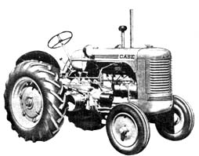
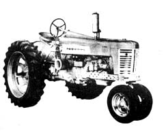
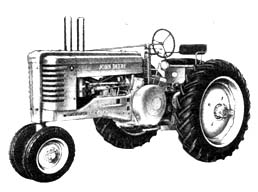
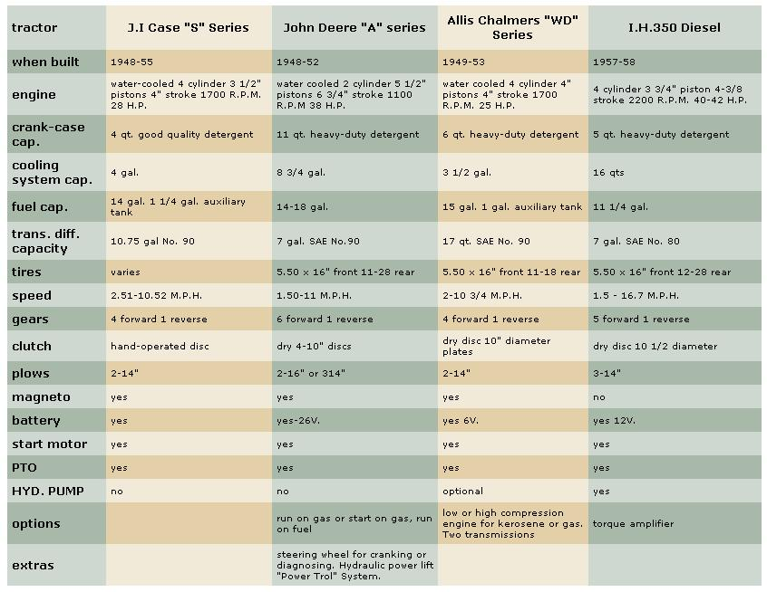

How To Buy That First Homestead Tractor
J.V. Dorner shares some tips on buying a recycled workhorse.
By J.V. DORNER
September/October 1971
Choosing a farm tractor can be a about as personal as picking traitor can be about as personal as picking a wife and-for the novice-the decision can be just as fraught with danger. It's mighty easy, in other words, for a beginner to hitch himself to an over-equipped and over-priced model that he really doesn't need, can't afford and can't handle. So easy, in fact, that I'm going to stick my neck out with some fatherly advice on the manly art of tractor buying.
In my opinion, today's new homesteader with forty acres or less is wise to forget all the shiny new toys down at the local tractor emporium. Just like modern automobiles, most new-fashioned tractors tend to be oversized, over-priced and laden with so many "conveniences" that they're no longer easy to repair. A first-time farmer would be better advised to put his extra dollars into land instead of into such fancy cast iron.
By going back a few years and buying a good, used, medium-sized (20 to 50 horsepower) tractor, the amateur agriculturist can easily cut his iron horse investment from several thousand dollars to several hundred without any terrific decrease in productivity. Such a tractor will pull at least one sixteen-inch plow and up to three fourteen bottoms. That's plenty power for anyone interested in raising food for his family and a few livestock.
Incidentally, that 20 to 50 horsepower may not sound like much compared to the "300 HP" in your uncle's GTX/SS409 unless you know that the quoted ratings for automobiles are a fanciful "developed" figure that has little to do with reality. Rest assured that a 20 HP tractor will plow rings around any "300 HP" sportscar. And-if you have a reasonably good local source of spare parts and access to a better-than-average mechanic (every farming community seems to have one of those)-you can't go too far wrong starting your agricultural adventure with a medium-size tractor that's 15 to 25 years old.
There's a number of good mechanical work horses in this size and age bracket including several models manufactured by Minneapolis Moline, Oliver, Ford, Cockshutt and International Harvester (the older III tractors all carry the trade name "Farmall" and the Farmall F-20 and M-when in good condition-are both excellent used tractor buys). Obviously I can't cover every make and model in this one article so I'm going to limit myself to recommending the J.I. Case S series, John Deer A series, Allis Chalmers WD and-one diesel-the International Harvester 350. All four models should give satisfactory service to a homesteader if purchased in reasonably good condition and given average care and maintenance.
The Case SC is a very widely distributed tractor and its prime mover is a water-cooled four cylinder engine with a bore of 3-1/2 inches and a stroke of four inches. The powerplant develops 28 HP at a full-throttle, no-load speed of 1700 r.p.m. That's right, 1700 r.p.m. Tractor engines are big, slow-turning workhorses that seem to run forever.
The S engine holds five quarts of good quality detergent oil, its cooling system (radiator and water jacket) has a capacity of four gallons, the fuel tank holds 14 gallons and the auxiliary tank (part of an optional kit that allows the tractor to burn lower cost fuel) has a capacity of 1-1/4 gallons. It takes about 10.75 gallons of No. 90 oil to fill the transmission and differential.
Standard tire sizes vary with the particular model as do speeds, which range from 2.51 to 10.52 m.p.h. All models in the S series have one reverse and four forward gears which are engaged by a hand-operated disc-type clutch. The power take-off (PTO) has its own shift which is engaged and disengaged by the main hand clutch.
The Case S has a battery and starter and lights for night operation. It also has a magneto, which means that the tractor can be hand started with a crank. This is an important feature (a dead battery need never keep a magneto-equipped tractor in the barn) so, if you purchase an S, be sure to get the crank that goes with it. If the crank's been lost, you'll find it to your advantage to have a new one made.
A slightly larger tractor is the John Deere A. The A has a watercooled, two-cylinder engine mounted at right angles to the center line of the machine. Pistons are a huge 5-1/2 inches across and travel 6-3/4 inches in their bore. Even at a relatively slow 1100 r.p.m., this Deere engine develops about 38 horsepower at the flywheel. The A will pull two 16-inch plows or three 14-bottoms and I know of at least one that will turn 12 acres of ground every eight hours.
The A's crankcase holds 11 quarts of heavy duty detergent oil (SAE No. 30 in summer and No. 10 in winter), the capacity of the cooling system is 8-3/4 gallons and the transmission takes an even seven gallons of SAE No. 90 oil.
Some A's will run on either straight gasoline or start on gas and operate on fuel oil (as will the Case S when equipped with the optional kit I mentioned earlier) after they warm up. Other A's are gasoline-only models. Fuel tank capacity of the series is 14-18 gallons.
The standard tire size for this tractor is 5.50 X 16s for the front and 11 X 38s (6 ply) on the rear. Forward speeds range from 1-1/2 m.p.h. in low gear to 11 m.p.h. in sixth. The machine has a hand-operated clutch and a separate shift for PTO.
A pair of six volt batteries (connected in series and mounted under the seat) delivers 12 volts to the lights and starter on the A and-like the Case S-this tractor is equipped with a magneto and can be started by hand with, of all things, the steering wheel.
To do this, loosen the nut which normally holds the steering wheel in place, pull the wheel off and carry it around to the left side of the tractor. Remove the crankshaft end cover, insert the ratchet-type stub shaft (if one isn't in the tool box on the tractor when you buy it, get a replacement from the local John Deere dealer), slip the steering wheel on the outer end of the shaft and "turn `er over". The flywheel can also be used for cranking an A, so there's no danger of losing the emergency "starter" on this one.
By the way, if it's ever necessary to fire up a magneto-equipped tractor with the battery completely removed, be sure to disconnect the generator field wire at the same time you disconnect the battery. If you remember this tip, you can start a battery-less tractor on its magneto and run it all day with no harm done . . . if you remove the battery and forget to disconnect the field wire, however, you'll burn out the generator in short order.
A hydraulic power lift raises and lowers the drawbar on the A Model John Deere and a built-in "Power Trol" system can be used to operate a remote hydraulic cylinder such as is found on a trailer plow, the cutter bar of a combine, etc. The tractor, of course, also has a power take-off or-in Deere terminology-a "power shaft".
The water cooled engine on the Allis Chalmers WD-the third tractor I'd like to mention-has a spark ignition and four four-inch pistons that travel a four-inch stroke. At 1700 r.p.m., this powerplant develops about 25 HP . . . enough muscle to pull two 14inch plows.
Capacities for the WD are six quarts of heavy duty detergent oil for the engine, 17 quarts of SAE No. 80 oil in the transmission and differential, six quarts of oil in the hydraulic pump, 15 gallons of fuel in the main tank and one in the auxiliary and three and a half gallons of fluid in the radiator. Water, of course, is fine for any of these tractors during warm weather but a half-and-half mixture of ethelyene glycol and water is recommended for freezing conditions.
An interesting point about the WD is that it was manufactured with both a low compression engine designed to burn distillate tractor fuel or low octane gasoline . . . and with a high compression powerplant that operates on gasoline only. The serial number, located on the left-hand side of the engine block, will tell you which compression ratio any particular WD has. A low compression model has the two letters "KA" following its number and "PA" is stamped after the serial number of a high compression engine. Champion. J11 spark plugs are used in the low octane powerplants and Autolite AN7 or equivalent plugs are specified for the WD's that burn gasoline.
The machine is mounted on 5.50 X 16 tires in front and 11-28s behind. Ground speed for the WD is about 2 to 1 11 m.p.h. for the four forward and one reverse gears. The WD's transmission is the sliding gear type and a dry disc clutch is used to disengage the engine. A separate transmission clutch (which disconnects the transmission from the drive train while leaving the PTO, belt pulley and optional hydraulic pump operating) is the double-plate, wet variety.
A look at homestead tractors, in my estimation, should is include at least one diesel and I've selected the International Harvester 350 as particularly useful to a new farmer . . especially one located in a warmer climate or blessed with snug garage. Diesels are notoriously hard to start in colt weather (even with the aids that are available) but they do wring more performance out of the fuel dollar and seem to have fewer breakdowns than gasoline-powered tractors.
The 350 diesel has four 3-3/4-inch pistons that travel a 4-3/8-inch stroke. The engine develops slightly over 40 Hi at 2200 r.p.m., which is not especially high . . . but diesel always seem to deliver more performance per horsepower because of their exceptionally high torque and "lugging" ability.
The 350's crankcase holds five quarts of heavy duty detergent oil, its cooling system 16 quarts, the transmission and differential seven gallons of SAE No. 80 oil and fuel tank 11-1/4 gallons. The capacity of the IH Touch-Control is 13-3/4 quarts of hydraulic fluid and it takes two quarts of SAE 10W oil to fill the independent power take-off system.
The 350 rides on 5.50 X 16 tires in front and 12-28s in the rear. With five forward gears operated by a single-plate dry disc clutch, this diesel tractor covers ground at speeds ranging from 1.5 to 16.7 m.p.h. and will pull three 14-inch plows.
Some IH 350s are equipped with a Torque Amplifier which provides a lower gear speed for each of the five gears. Thus, without disengaging the clutch or stopping the tractor, a driver can temporarily create a lower gear for crossing short stretches of rough terrain. Similarly, the operator can start a heavy load rolling in TA and then "shift up" once under way without ever actually shifting the tractor. The TA functions, in other words, very much like the low side of a split axle truck.
As you probably know, diesel engines ignite the fuel they burn-not with spark plugs-but with the heat of the compressed air in their cylinders. These powerplants, then, must be turned over quite rapidly before they'll start and it takes a 12-volt electrical system to do it on the 350 . . . no handcranking here. Emergency starting can sometimes be done by towing the tractor, but that's a little too dangerous for most folk's taste.
International Harvester has christened the hydraulic system on the 350, "Hydratouch". It's a fairly sophisticated design and can be used to power the hydraulics on almost any remote cylinder or mounted or towed implement. The Hydratouch controls are located under the operator's right knee when he's seated at the wheel of the tractor.
One thing to keep in mind about a diesel engine is that it does have filters placed between the fuel tank and the injection pump. These filters strain all water and dirt from the diesel oil before it reaches the ultra-smooth innards of the pump and must be replaced regularly . . . the secondary one every 250 hours and the final filter after each 500 hours of operation. See the tractor's service manual for specific directions for this job but do change those filters on schedule. The life of a diesel injector pump depends on this bit of preventive maintenance and new pumps can run $350.00. Nuff said.
I'd like to close this dissertation with a few time-honored cliches:
(1) Buy the biggest tractor you can afford, as long as it's easy to steer, start and otherwise operate. When all else is equal, a big tractor will sometimes beat a little tractor with that important margin of performance when the chips are down.
(2) Buy the newest or best tractor you can afford . . . AFTER you have all the land you need.
(3) Keep your tractor clean, change its oil and grease it according to schedule. Everybody says this . . . almost nobody does it. Poor maintenance is responsible for most tractor breakdowns.
A homesteader will do well to get the operators' and service manuals for his tractor when he buys the machine. If the machine is a used one these books will often have been lost and it may be necessary for the new owner to contact the nearest dealer or even the company's home office to obtain them. The manuals generally cost around $3.00 and are worth many times their weight in gold.
The tractors mentioned here will probably cost upwards of $250.00 with the International diesel, of course, being the most expensive. As with garden tractors, the best bargains are available at farm auctions or from private owners. Many times, you can find a "best buy" with an advertisement in the smaller local papers.
An acquaintance of mine found so many good bargains through the newspapers that he purchased three tractors. After selecting the one he wanted, he parked the other two along the road with "For Sale" signs on them. He claims that he drove such hard bargains in selling the surplus machines that the one he kept cost him nothing at all. Could be.
|
 The J. I. Case Model S. Note wide or ""row crop"" arrangement of front wheels. The Model SC is the same tractor but with it's two front wheels close together, giving it a triangle ground print like the other tractors illustrated here. |
 The Allis Chalmers WD. The tricycle version shown here is quite popular in some areas of the midwest but since the AC and Case are both sidered ""off brands"" by John Deere and International diehards, you can sometimes pick up exceptional bargains on both makes. |
 The International 350. This, the only diesel mentioned in the above article, is also available with wide stance front wheels. You won't find nearly as many diesel as ordinary spark ignition tractors on the used market and, if you can't locate a 350 but you have your heart set on an International, try an F-20, M or Super M. |
|
 The John Deere A. Once you hear this two cylinder (most tractors have four) machine chugging across a field you'll know why many farmers fondly refer to it as ""Poppin' John. ""A popular tractor in it's day and readily available on the used equipment market. |
 |
|